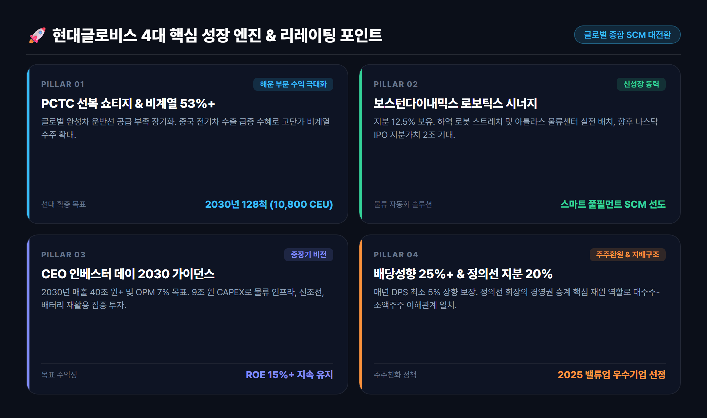
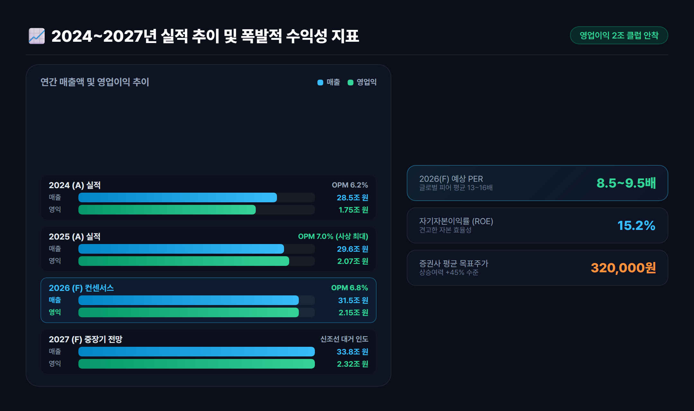
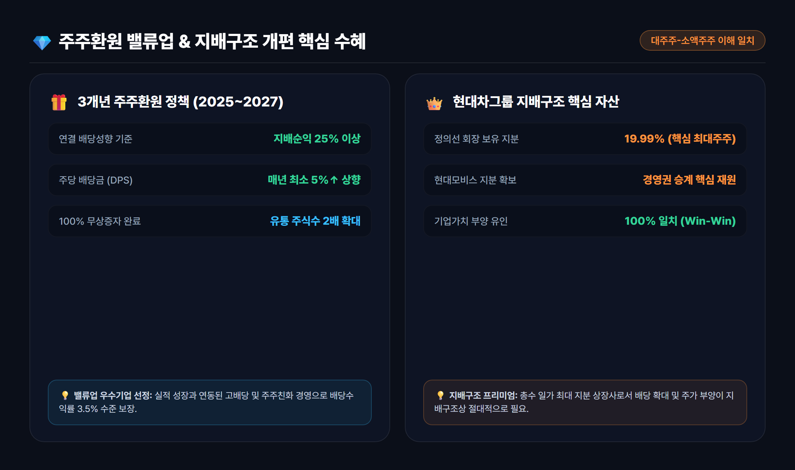

1. 사상 최대 실적 경신: 현대글로비스의 펀더멘털 대전환
국내 대표 종합 물류·해운 기업인 현대글로비스(086280)가 2025년 창사 이래 최초로 연간 영업이익 2조 원 고지를 돌파하며 새로운 역사를 썼습니다.
과거 현대글로비스는 '현대자동차그룹 캡티브(그룹사 내부) 물량에 의존하는 단순 물류 회사'라는 시장의 편견에 갇혀 만성적인 밸류에이션 디스카운트를 겪었습니다. 하지만 최근 몇 년간 글로벌 해운 선대 확장과 독자적인 공급망 인프라 구축을 통해 글로벌 톱티어 종합 SCM(공급망 관리) 플랫폼으로 완전히 탈바꿈했습니다.
💡 현대글로비스 핵심 펀더멘털 포인트
• 사상 최대 실적: 2025년 연간 매출 29.6조 원, 영업이익 2조 730억 원 달성 (2026년 매출 31.5조 원, 영업익 2.15조 원 전망)
• 글로벌 선대 경쟁력: PCTC(자동차 전용 운반선) 글로벌 시장점유율 상위권 도약 및 2030년 128척 친환경 선대 확보
• 주주가치 혁신: 100% 무상증자 완료, 3개년 배당성향 25% 이상 + 매년 DPS 최소 5% 상향 약속
2. PCTC 선복 쇼티지와 비계열 매출 53% 돌파의 위력
현재 글로벌 완성차 물류 시장에서 가장 강력한 진입장벽이자 수익원 역할을 하는 것은 바로 PCTC(Pure Car and Truck Carrier, 자동차운반선) 선복의 구조적 공급 부족(Shortage)입니다.
국제해사기구(IMO)의 강력한 탄소 배출 규제로 인해 노후 선박 폐선이 가속화된 반면, 조선소 도크 부족으로 신조선 인도는 지연되고 있습니다. 이 와중에 중국 완성차(BYD, 지리, 체리 등)의 해외 수출 폭증으로 글로벌 자동차 수송 수요가 폭발하면서 PCTC 운임은 역사적 고공행진을 이어가고 있습니다.
[글로벌 PCTC 시장의 3대 호재]
1. 공급 제약: 신조선 인도 지연 + 탄소 배출 규제 폐선 = 선복 공급 쇼티지 지속
2. 수요 폭증: 중국 전기차 및 글로벌 하이브리드차 수출 물동량 급증
3. 운임 상승: 고단가 계약 체결 및 중장비(High & Heavy) 화물 비중 확대현대글로비스의 자동차 해상운송 비계열(Non-Captive, 현대차·기아 외 고객사) 매출 비중은 2010년 12%에서 2019년 52%, 최근 53% 이상으로 가파르게 상승했습니다. 글로벌 완성차 업체들이 현대글로비스의 정시 운항 능력과 대규모 선대에 의존하게 되면서 협상력이 극대화된 결과입니다.
회사는 2027~2030년까지 세계 최대급인 10,800 CEU급 초대형 LNG 이중연료 추진 PCTC선을 대거 인도받아 선대를 110~128척 수준으로 늘려 글로벌 1위 자동차 선사로서의 입지를 굳힐 계획입니다.

3. 보스턴 다이내믹스 로보틱스 시너지와 스마트 물류 비전
현대글로비스의 미래 성장 동력 중 가장 시장의 뜨거운 관심을 받는 축은 보스턴 다이내믹스(Boston Dynamics)와의 로보틱스 시너지입니다.
소프트뱅크의 지분 매각 절차 이후 현대차그룹이 지배구조를 재편하면서, 현대글로비스는 보스턴 다이내믹스 지분 약 12.5%를 확보했습니다. (정의선 회장 25.0%, HMG글로벌 62.5%)
로보틱스 스마트 물류의 실전 적용
- 스트레치(Stretch) 로봇: 컨테이너 및 물류센터 내 트럭 하역 작업을 완전 자동화하는 박스 핸들링 전문 로봇으로, 현대글로비스 스마트 물류 거점에 순차 배치 중입니다.
- 차세대 전동식 아틀라스(All-New Atlas): 인간 작업자를 대체할 차세대 휴머노이드 로봇으로, 고중량 부품 이송 및 복잡한 물류 공정에 투입을 준비하고 있습니다.
- 나스닥 IPO 상장 모멘텀: 글로벌 로보틱스 붐에 힘입어 향후 보스턴 다이내믹스의 미국 증시 상장 시, 기업가치 10조~15조 원 기준으로 환산하면 현대글로비스의 보유 지분 가치만 1.5조~2조 원 규모로 재평가받게 됩니다.
4. 2024~2027년 실적 추이 및 밸류에이션 심층 분석
현대글로비스는 2024년 6월 CEO 인베스터 데이를 통해 '2030년 매출 40조 원 + α, 영업이익률 7%, ROE 15% 이상'이라는 담대한 중장기 목표를 제시했습니다. 2025년에 이미 영업이익 2조 원(영업이익률 7.0%)을 조기 달성하며 목표 달성에 청신호가 켜졌습니다.
| 구분 | 2023년 (A) | 2024년 (A) | 2025년 (A) | 2026년 (F) | 2027년 (F) |
|---|---|---|---|---|---|
| 매출액 (조 원) | 25.68 | 28.45 | 29.57 | 31.50 | 33.80 |
| 영업이익 (조 원) | 1.55 | 1.75 | 2.07 | 2.15 | 2.32 |
| 영업이익률 (OPM) | 6.1% | 6.2% | 7.0% | 6.8% | 6.9% |
| 지배주주순이익 (조 원) | 1.07 | 1.09 | 1.73 | 1.65 | 1.78 |
| ROE (%) | 15.2% | 14.1% | 18.5% | 15.2% | 15.0% |
| EPS (수정, 원) | 14,264 | 14,560 | 23,093 | 22,000 | 23,733 |
| DPS (주당배당금, 원) | 3,150 | 3,800 | 5,800 | 6,200 | 6,600 |

현재 주가와 밸류에이션 매력도
• 현재 시가총액: 약 15조 원 (주가 20만 원 초반대)
• 2026년 예상 PER: 8.5 ~ 9.5배
• PBR: 1.3배 수준
• ROE: 15% 이상
글로벌 3PL 및 전문 해운사의 평균 PER이 13~16배 수준인 점을 감안할 때, 현대글로비스의 현재 주가는 뚜렷한 저평가(Undervalued) 구간에 머물러 있습니다. 국내외 주요 증권사들의 평균 목표주가는 310,000원 ~ 340,000원으로, 현 주가 대비 45% 이상의 업사이드(상승 여력)가 열려 있습니다.
5. 배당성향 25%+와 지배구조 개편의 핵심 수혜
현대글로비스가 가치투자자들에게 강력한 러브콜을 받는 또 다른 이유는 한국 증시 최고의 주주환원 의지(밸류업)와 그룹 지배구조상의 특수성 때문입니다.
① 주주환원 가이드라인 (2025~2027년 3개년)
- 연결 지배순이익 기준 배당성향 25% 이상 유지
- 주당배당금(DPS) 매년 전년 대비 최소 5% 이상 상향 지급
- 2024년 1:1 무상증자 단행을 통해 거래 유동성을 극대화하여 코리아 디스카운트 해소에 앞장섰으며, '2025 밸류업 우수기업'으로 선정되었습니다.
② 정의선 회장 20% 지분의 나비효과
현대글로비스의 최대주주 중 한 명은 정의선 현대차그룹 회장(지분율 약 19.99%)입니다. 향후 현대차그룹의 순환출자 해소 및 현대모비스 중심의 지배구조 개편 과정에서 정의선 회장의 경영권 승계 재원 마련을 위해 현대글로비스의 기업가치 상승과 높은 배당은 필연적인 수순입니다.
💡 핵심 요약: 현대글로비스는 대주주의 경제적 이익과 일반 소액주주의 주주가치가 정확히 같은 방향을 가리키는 몇 안 되는 최우량 지배구조 수혜주입니다.

6. 투자 리스크 점검 및 최종 결론
⚠️ 투자 시 고려해야 할 리스크
- 환율 변동성: 달러 결제 비중이 높은 해운/해외물류 사업 특성상 원/달러 환율이 급격히 하락할 경우 원화 환산 이익이 일시적으로 감소할 수 있습니다.
- 지정학적 리스크 및 유가: 중동 분쟁이나 수에즈 운하 이슈로 희망봉 우회 항로를 이용할 경우 단기적인 연료비 부담이 발생할 수 있습니다.
- 글로벌 완성차 수요: 주요국의 자동차 관세 장벽이나 고금리 장기화에 따른 완성차 소비 둔화 가능성은 모니터링이 필요합니다.
🎯 최종 종합 의견: "실적과 주주환원, 지배구조 3박자를 갖춘 저평가 가치주"
현대글로비스는 ① PCTC 해운 선복 쇼티지에 따른 독보적 이익 체력, ② 비계열 매출 53% 달성을 통한 글로벌 독립성, ③ 보스턴 다이내믹스 로봇 지분 가치, ④ 배당성향 25% 이상의 밸류업 정책, ⑤ 대주주 지분 20%가 담보하는 기업가치 부양 동력까지 완벽한 상승 트리거를 갖추고 있습니다.
PER 8~9배 수준의 역사적 저평가 영역에서 안정적인 배당 수익과 함께 중장기 우상향 모멘텀을 누릴 수 있는 최적의 포트폴리오 가치주로 판단됩니다.